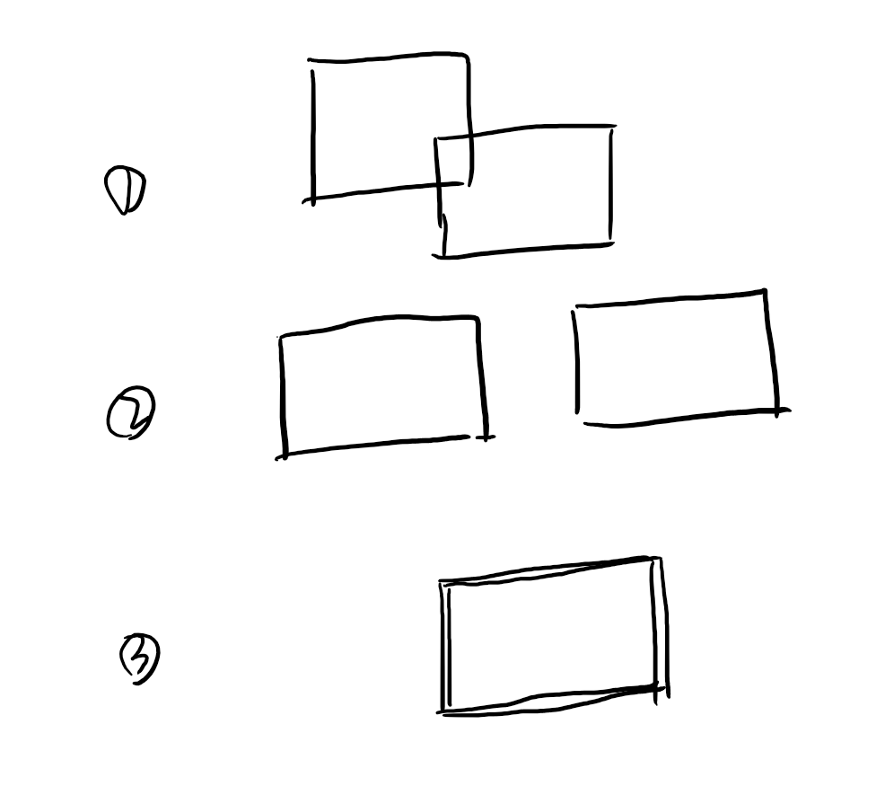

0x00
先两句话说说都是啥！
lua 在上一篇有过介绍了，是速度最快的嵌入式脚本语言之一。
而今天提到的这个 PICO-8 是使用了基本符合 lua 语法的脚本语言的开发平台，被称作 fantasy console 的平台，不仅包含了代码，精灵图像，声效音乐的编辑器，还集成了发布到论坛，导出 html，甚至是导出 .png 格式文件，没错，整个游戏就存放在这一张图片之中，这也是为什么，PICO-8 开发的游戏被称作卡带的原因了。
之前，我硬着头皮自己报名了机核网与 clockwork 联合举办的 Gamejam 活动，幸运地拿到了机核提供的开发机，心心念想着不能浪费这次玩耍的好机会。
再加上前段时间在 Unity 用了一段时间的 MoonSharp 和 lua，手痒痒决定再进一步，在 PICO-8 上，用 lua 写一个复古游戏（-12刀）。
0x01 PICO-8 复古游戏和游戏机制的极限表达
在得知这样一款开发平台之后，马上就被这形形色色的创意吸引了，我一直是一个不懂游戏性的人，很难说什么设计好玩什么设计蠢，我甚至仔细想过，为什么 E 胖做了一个 GameJam 来讽刺社交游戏通过滥用游戏来操纵玩家，叫做《AVGM ( Abusive Video Game Manipulation )》（这里放上了卡姐的视频地址），但我却难以理解为什么，一个简单开关灯的游戏，也能让那么多人真的点击上万次，不理解，这个游戏，和《以撒》的本质不同在哪里，驱动力是好像没什么不同？
所以这就是我为什么用 PICO-8 了，在这里，你能使用的精灵有限制，你能写的代码长度也有限制，在有限的空间中，专注于游戏机制的更迭，我觉得是这个小巧的开发引擎最吸引我的。当然，想必很多人知道这款艺术品的途径和我一样，就是《Celeste》里那一个可以解锁出来的原型，而这个原型也正是这个 PICO-8 上最有名气的作品了。
毕竟，有限制的自由才是真正的自由，啊哈哈哈哈哈哈哈哈，我真是太有学问了。
这种在如此有限的“机能”下，压榨玩法的理念很酷。当然也有相对来说比较麻烦的方面，比如没有主流引擎中的很多常用的功能，如碰撞，物理等等，这些都需要自己去造轮子。
PICO-8 在网上资料虽然不算多，但也足够我们来从零开始了，而且在论坛上，每一张卡带都是一本经验书，看到眼前一亮的作品，马上可以去研究实现方式，这真的很酷。下面是随便在搜索框里键入“Pico-8”就能看到的东西了。
- 显示
在屏幕上，PICO-8 是固定了显示分辨率的， 128 * 128
左上角为坐标 (0, 0) 右下角为 (127, 127)
- 游戏循环
PICO-8 简单的使用：
记住几个入口函数即可，完成我们的游戏主循环：
_init()
用来初始化游戏内容，仅在开始时执行一次。通常会在这里载入标题界面，以及之前想展示的画面
_update()
每秒执行 30 次的更新函数，相应的有 _update60() 每秒执行 60 次，但不能同时使用这两个函数（后者会屏蔽前者）。
_draw()
在 _update() 执行之后，同样是每秒 30 次。
好了，这么基础的东西再多说就是凑字数了，有没有人按字数给我稿费，看这个吧《GameDev_with_PICO-8》，神秘代码”zwv7”…
0x02
其实在开发过程中，真的挺多困难的，最大的困难就是外界诱惑太多了，火锅！罗小黑！人生一串！李诞……太多了，能坚持在电脑前坐好看代码，已经很难了，更要命的是，真的是什么都要自己写，我最后的成品，是一个两分钟就能玩完的假冒伪劣冒险游戏，我真的敢放链接，这里虽然不能评论，如果恶心到你了可以去那里发泄一下。
遇到的困难蛮多，首先就是，对 lua 中表的不熟悉，简直是寸步难行，难怪说，就算认识了语法，但也甚至编程的门都没入。我语法认识蛮久了吼……
lua 的 table 是实现了一种保存键值对的功能，但这个值，在 lua 中可以是任何你能想象的东西，有了这个便利，lua 的面向对象也就有着落了，我这等小白，也就别想随便看懂了。
小声）来个自问自答，那么我在这都研究了些什么呢？
- 碰撞系统
单说这个说是一个系统，感觉都抬举我了。还是要说，假装高大上的说，首先作为一个冒险游戏，我要实现碰撞，只需要实现最简单的矩形碰撞即可，那这个有很方便的方法来实现。两个矩形的关系无非这几种：

而所谓碰撞，就是要检测从第二种，到第一种的过程，那么
这里遵循 PICO-8 的规矩，用 top-left 为 (0, 0) 向下向右生长，以左上角的点 (x, y) 和右下角的 (x+n, y+n) 来指定一个矩形（这是正方形啦，一样一样），有 r1 和 r2 两个矩形，那么这两个不相交即：
1 | r1.x+n < r2.x || r1.x > r2.x+n || r1.y > r2.y+n || r1.y+n < r2.y |
也就是说啊，如果两个矩形相交需要同时满足条件，一个矩形的左界要在另一个矩形的右界的左边，右在左的右边，上在下的上面，下在上的下面。简单吧……
- 面向对象
这个矩形碰撞貌似没多大用处啊，现在这么看啊，是没啥用，但是配合面向对象就舒服多了，对于不同的对象，赋予不同的碰撞体积，通过对象的碰撞检测函数，检测下次更新移动的位置是否会产生交叉，就灵活多了嘛。
那么，lua 中面向对象怎么做嗯？
看这个吧(●’◡’●)(●’◡’●)
其实我是真没想好怎么简单讲这个过程，留个坑。
系统
初始化：入口 init
更新系统：入口 update
渲染系统：入口 draw
我们看到这个，熟悉吧，其实就是应用上面，面向对象，在空对象表中管理好游戏中的每个对象，在每一帧主循环中，对每个对象的相关函数进行执行，嗯嗯，这个板块也在坑里，让我好好理理顺。
- 用户信息
PICO-8 另一个让我觉得很酷的设计，是类似于微机系统（单片机系统）内存控制的感觉，比如说，屏幕图像数据是从 0x6000 ram 地址开始的 8k 空间，有了这个，我们是可以做很多文章的，比如实现 glitch 感觉：
1 | function distort(t, func) |
而在 sprite editor 中，对不同类型 tiles 的 sprite 通过 flag 值区分，也可以在代码中为这些不同类型的精灵，为对象进行初始化，添加不同的碰撞体等操作。
要注意的是，这些 sprite 的 flag 要怎么用，完全取决于我们自己，数量上可以设置最多 8 个 flag。而且使用的方式也跟嵌入式编程似曾相识，使用 fget(sp) 直接获取一个整型值，包含了所有 flag；相应的，使用 fset(sp, flags) 就会将 flags 中的值直接设置到精灵上，而如果带上了布尔值，那么就只能使用 0 到 7 的索引了，看个例子就懂了。
如下：
1 | fset(2, 1+2+8) -- sets bits 0,1 and 3 |
- 游戏流程控制
与 Unity 中分不同场景不同，我们在 Pico-8 中只有这么一个场景，为了实现所谓标题页面，不同场景切换的感觉，可以通过将主循环的三个主要函数名，指向其他更新函数的方式来实现，并不复杂。
0xff
老弟儿，你说，这东西是不是很酷，那么希望你现在别去看我这个 demo，我会改的，真的！